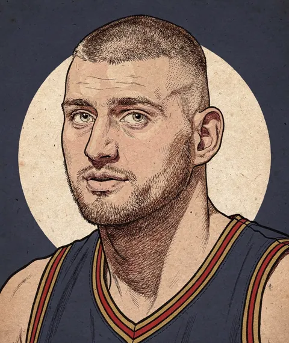

The Draft Model’s Report Card
Fifteen drafts, graded on the calls that cost real money — the stars that it got right, the ones that it got wrong — and what it makes of the 2026 class.

4.2 million viewers tuned in to see the results of the NBA Draft in June of last year,1 and 2.3 million to the Draft Lottery six weeks prior, whose sole purpose is to determine team draft position.2 Players in the opening 4 years of their contract have accounted for ~26% of league mWAR (Marginal Wins Above Replacement) and ~16% of salary over the previous nineteen years. Of course there will be extreme skew within a class, with the top 3 returning ~44% of a typical class’ aggregate value.34
There’s no shortage of examples of failed draft picks. The substack Freezing Cold Takes focuses exclusively on these. But to my knowledge no one has publicly subjected an equivalent board to similar scrutiny. Obviously there are many mock drafts available online, but few explain their underlying process. Those that were openly accessible appear to have been absorbed by front offices: John Hollinger’s Draft Rater ceased publication when the Memphis Grizzlies signed him in 2012, Layne Vashro’s draft projection calculator ended when Vashro joined the parent firm of the Denver Nuggets, and Kevin Pelton left ESPN in March to join the Houston Comets. Only the author of ESPN’s RPM, Jeremias Engelmann, took the opposite path, having worked for the Phoenix Suns and Dallas Mavericks before publishing his draft model again. Front offices must believe there’s value to be gained.
The rules
This line of thinking originates with Cade Massey and Richard Thaler’s concept of ‘surplus’. A player’s surplus is the difference between his implied value and what he costs. Using the NFL as a proxy, they showed that the leading draft picks were heavily overpaid relative to their contribution, while the final selection in Round 1 generated greater surplus than the #1 pick.5 Applying the logic to the NBA, Arturo Galletti and Nate Silver extended the analysis through the end of the player’s rookie contract.6 The leading 3 picks generated ~three times the surplus generated by picks 23-30.7 Once subsequent years are included, this roughly doubles for any adjacent bracket of picks.8
The record below comes from a recipe I chose knowing how all fifteen classes turned out.910 11 For the current draft, the leading 10 prospects have an expected value ~five times their middle estimate, as shown in the subsequent tables. And 69% of that is achieved post-rookie deal.
The grade
Each player was paired with another from the same class, scaled to the difference in value between the 2.12 The board was correct in 84% of the $ spent, while the draft was 78%. Furthermore, the board outperformed the draft in fourteen of the fifteen classes, greater than we’d expect by chance. Excluding the inclusion of Jokić in the draft, the board was superior in thirteen of fourteen.13
If we treat each player equally, by rank rather than by the dollars at stake, we get a much weaker result: the board outperformed the draft in eight of fifteen classes, an average margin luck alone would match 60% of the time.14 As discussed, the vast majority of picks in any given class fail to generate significant value, and the board is no better than the 30 front offices on those.
The stars it saw
Those that the board placed >=10 positions ahead of their draft position and subsequently placed in the top 5 of their class:
| Class | Player | Pick | Board rank | Expected | Middle | Finished | Returned |
|---|---|---|---|---|---|---|---|
| 2014 | Nikola Jokić | 41 | 4 | $285M | −$37M | 1st | +$1.6B |
| 2012 | Draymond Green | 35 | 13 | $133M | $14M | 2nd | +$831M |
| 2015 | Kevon Looney | 30 | 12 | $130M | $8.1M | 5th | +$209M |
| 2017 | Derrick White | 29 | 13 | $118M | $16M | 4th | +$532M |
| 2020 | Tyrese Maxey | 21 | 5 | $264M | $63M | 5th | +$276M |
| 2008 | George Hill | 26 | 11 | $64M | −$20M | 3rd | +$471M |
| 2011 | Jimmy Butler | 30 | 15 | $88M | −$21M | 1st | +$959M |
| 2007 | Marc Gasol | 48 | 34 | −$22M | −$58M | 3rd | +$653M |
Expected is the board’s average career value to the drafting club, Middle its median; Finished is where his return ranks in his class; Returned is what he has actually returned so far. All at the 2026 cap.
In 2014 forty players went before Nikola Jokić. The board assigned Jokić 4th, despite projecting a middle outcome of losing $37M. Its best single guess was that he would never be worth what a club pays a pick that high, but it took the chance that a 19-year-old center in the Serbian league became a star. Since then he’s been worth $1.6B to Denver, vs a middle of −$20M for George Hill and −$21M for Jimmy Butler.
Derrick White also features: drafted at 29th, assigned position 13th by the board and placed 4th in his class. To date he has returned $532M to his teams, $376M of which have accrued under deals signed since the conclusion of his rookie contract.15 Boston has been collecting since February 2022.
The stars it didn’t
Of the 45 players who finished in the top three of their class, the board had 31 in its top ten and ranked 30 higher than the teams did and 10 lower. Including: Russell Westbrook, drafted fourth in 2008, 15th on the board and assigned an expected value of $53M, who has returned $886M; and Joel Embiid, taken third in 2014 while the board had him at 9th.
Of the board’s own top 3 picks in each class, 35 of 45 finished in the top ten of their class. Of the actual 1st, 2nd and 3rd overall selections: 22.16 The board’s top-three picks that didn’t:
| Class | Player | Pick | Board rank | Expected | Middle | Finished | Returned |
|---|---|---|---|---|---|---|---|
| 2011 | Brandon Knight | 8 | 3 | $198M | $5.6M | 59th | −$115M |
| 2017 | Markelle Fultz | 1 | 2 | $420M | $148M | 59th | −$18M |
| 2013 | Nerlens Noel | 6 | 1 | $492M | $163M | 55th | −$2.1M |
| 2014 | Dario Šarić | 12 | 2 | $368M | $177M | 38th | +$1.6M |
| 2014 | Jordan Adams | 22 | 3 | $291M | $141M | 23rd | +$9.1M |
Expected is the board’s average career value to the drafting club, Middle its median; Finished is where his return ranks in his class; Returned is what he has actually returned so far. All at the 2026 cap.
Brandon Knight was the board’s third pick in 2011; the teams took him eighth, and he has returned his teams −$115M. His largest deal paid him $12M to $16M a year from 2015-16 to 2019-20. Under our framework, he failed to reach replacement in seven of his nine seasons, peaking at 0.2 mWAR.17
The 2026 class
Broadly the board and draft were aligned at the top. Cameron Boozer and the board’s 2nd choice, AJ Dybantsa, were taken third and first respectively. Three of the board’s top 10 fell in the interval [17th, 22nd]. The board’s top 10:
| Board rank | Player | From | Pick | Expected | Middle | Range |
|---|---|---|---|---|---|---|
| 1 | Cameron Boozer | Duke | 3 | $916M | $390M | −$55M to $3.0B |
| 2 | AJ Dybantsa | BYU | 1 | $419M | $82M | −$44M to $1.6B |
| 3 | Labaron Philon Jr. | Alabama | 22 | $403M | $82M | −$43M to $1.5B |
| 4 | Ebuka Okorie | Stanford | 17 | $330M | $73M | −$57M to $1.3B |
| 5 | Keaton Wagler | Illinois | 5 | $300M | $76M | −$72M to $1.1B |
| 6 | Christian Anderson Jr. | Texas Tech | 18 | $289M | $0.1M | −$66M to $1.2B |
| 7 | Darryn Peterson | Kansas | 2 | $262M | −$26M | −$62M to $1.1B |
| 8 | Darius Acuff Jr. | Arkansas | 7 | $228M | $23M | −$55M to $874M |
| 9 | Caleb Wilson | UNC | 4 | $218M | $26M | −$66M to $845M |
| 10 | Mikel Brown Jr. | Louisville | 6 | $213M | $22M | −$46M to $819M |
Career value to the drafting club at the 2026 cap: the average (Expected), the median (Middle), and the 10th to 90th percentile outcome (Range).
Christian Anderson Jr., selected eighteenth, is sixth on the board, with Expected and Middle outcomes of $289M and $0.1M respectively. This represents the largest ratio of Expected to Middle in the board’s top 10.
Maliq Brown went 44th and the board has him 15th on his ‘motor’ and ‘feel’, its biggest bargain. However, it attaches minimal importance to his projected shooting, where the scouts’ grade places him towards the bottom of the scale.18
After five seasons I’ll grade this class the same way. In the meantime, I’ll look to see if Christian Anderson Jr. (eighteenth) achieves his upper bound and Maliq Brown develops as a shooter.
Figures: the draft board, classes 2007 to 2021 out of fold and the 2026 class as projected; what each player returned his drafting club through 2025-26. Assuming sign-on at the 2026 cap at time of writing. Wins converted to $ using the league-wide market rate for a win, calculated per the methodology.
- NBA Draft First Round, 2026, via ESPN and ABC. ↩
- The 2026 lottery, on ABC. ↩
- Across the fifteen classes graded here, the three biggest returns made up 44% of the class’s total, on average. ↩
- Between seasons 2007-08 and 2025-26, draftees in the initial 4 years of their contract accounted for 26% of the league’s mWAR (i.e. in excess of replacement). This represented 16% of league salary and 33% of surplus (player value net of salary, treating overpayment as 0). ↩
- Cade Massey and Richard H. Thaler, “The Loser’s Curse: Decision Making and Market Efficiency in the National Football League Draft,” Management Science 59, issue 7 (2013), pp. 1479–95. Player surplus measured across the first 5 years of the player’s career, using the wage of similar free agents. ↩
- Arturo Galletti, “The Value of a Draft Pick and Draft Pedigree in the Finals,” Wages of Wins Journal, June 22, 2011, over a player’s first four seasons; Nate Silver, “How Much Is Winning the (NBA Draft) Lottery Really Worth?” FiveThirtyEight, 2014, over five. ↩
- Due to the restrictive nature of the rookie contract. We therefore consider the 10-year span of the classes 2007-2016. Each of the 595 draftees’ cumulative surplus (as defined above) is computed. Resampling whole classes, the middle 90% of the ratio (top 3 to picks 23-30) runs from 2.1 to 5.2, and the surplus falls from each group of picks to the next. ↩
- For a star due to the ceiling imposed by the max, for a good player as front offices can retain players at a discount to their open market value. Notably, the leading 3 continue to exceed picks 23-30 by ~three and a half-fold, while the #4-7 bracket are broadly comparable. ↩
- As of that spring, for each of the drafts from 2007 to 2021, the board evaluated every identified prospect. For excluded classes, we fitted an alternative board to the remaining pool. See the methodology. Critically, rather than outputting a single assessment of each player, the board generates a distribution of potential careers, from complete failure to superstardom, each associated with a probability. It then prices each outcome the way the club would collect it: the rookie deal at open-market prices, then, if the club re-signs him, what he’s worth beyond his pay. The player is ranked based on this Expected value. ↩
- Assuming that the player attracts a further contract, capped at the maximum or else reflecting the rate received by analogous free agents, conditional on his career output, age and that this is his 2nd contract. ↩
- A pick is a call option: the downside is a minimum liability of the player’s rookie-scale salary and displacement of an existing roster member; the upside is uncapped. An option is worth its expected payoff, the average over every outcome. Whether a club should want the expected value is a fair question: Ryan S. Brill and Abraham J. Wyner argue that NFL teams trade as if they value a pick by its chance of landing an elite player, and Joseph Bewtra and Brill show that NBA pick values swing wildly between the average and the middle outcome. Counting the years after the rookie deal is how the board puts the elite player into dollars. ↩
- Misjudging Jokić in this fashion incurs a cost of ~$1.6B, whereas swapping 2 non-contributing 2nd-rounders has a negligible effect. ↩
- Swapping the board’s and the draft’s scores at random within each class, 10,000x, produces an average differential as large in <1% of cases, whether or not the 2014 class is included. Equivalently, if we consider the share of what their class returned that the board’s and draft’s respective first 10 players accounted for (53% vs 43%), or apply a Google-style ranking metric (NDCG) that disproportionately rewards the order at the top of the list, the board wins in thirteen and fifteen of fifteen classes respectively. ↩
- Spearman rank correlations with what each player returned, within each class and averaged: 0.44 for the board, 0.45 for the draft, 892 drafted players. ↩
- Clubs will generally benefit from retaining their own players, able to equalize any incoming offer or exceed the cap via Bird rights. At the expiry of their rookie contract, clubs were able to retain 94% of players that averaged 5-10 mWAR in its last season. ↩
- Considering classes 2007-2021, the median position of the board’s leading 3 in their class was 5th, league-wide 11th. ↩
- Contracts that exceed a player’s implied value are treated as a negative. Other examples reflect either injury, which the board incorporates into its projections but cannot attribute to specific individuals, or error by the board. ↩
- Derived from the ratings assigned to each player on their NBADraft.net profile by a machine learning algorithm (1-10). With the other attributes held constant, each additional point of Shooting moves the board’s Expected value by ~2%, while a point of Motor or Feel moves it by more than 28%. ↩